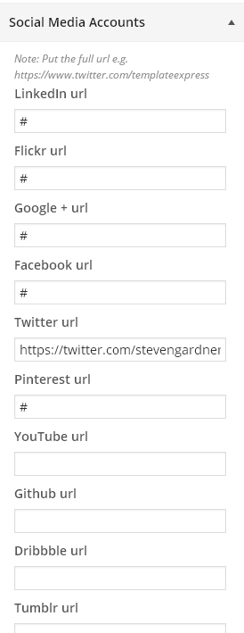

eryn Documentation
Greetings! Bellow you will find complete docummentation for eryn theme.
General Information - Top
First of all, we want to say thank you! We're very grateful that you have chosen our theme for your website. We will do everything we can to provide you the best support possible. Feel free ask us if you need more help.
Video Tutorials - Top
Below is a list of our videos, they are provided to give you extra help with setting up and customizing this theme.
Folder Structure - Top
eryn theme folder structure:
- changelog.txt - this file contains all of the changes from the initial release.
- eryn.zip - contains all the files required for the theme to run & install (also the main CSS file called 'style.css'), this theme is build on top of Underscores.
- documentation - this folder contains the help files (which you are currently reading),
- import - this folder contains the xml file with preview theme content.
FAQ - Top
Below are some of our more common support questions.
- Is there a way I can add my own CSS touches?
- Definitely! We have included a "Custom CSS" textarea panel in the Customizer within the "Global Settings" panel.
Change Log - Top
eryn - Simple professional Responsive Wordpress Theme
--------------------------------------------------------------
05/12/2014 - Version 1.0
- Release
Sources and Credits - Top
This theme takes advantage of these generous tools:
- OWL Carousel
- Font Awesome
- Underscores
- Flexslider
- FitVids
- Inview
- Tooltipsy
- Google Fonts
- Demo images from Pixabay
- Demo logo by TemplateExpress, feel free to use anyway you want.
Getting Started - Top
In this section we will go over the process of setting up WordPress environment, next I will show you how to install and activate your brand new theme. Finally you will learn how to setup all of the key features of eryn theme.
Preparing Wordpress - Top
If you already have WordPress installed on your server just skip to the next section. If you haven't yet installed WordPress on your server, here you will find a complete guide on this topic. Just follow the steps and you will be ready in no time with a WordPress website.
Installation and Theme Activation - Top
Each WordPress Theme can be installed in two ways: via ftp client or through the admin panel:
- Installing WordPress Theme via FTP client:
-
- unzip the 'eryn.zip' package (the zip package is inside the folder you have downloaded from ThemeForest),
- connect to your server,
- navigate to the folder where your WordPress is installed,
- go to wp-content/themes/,
- upload the 'eryn' folder into the 'themes' directory (the path will look like this: wp-content/themes/eryn),
- open the wp-admin panel (navigate through web browser to the folder where you have installed the WordPress e.g www.your_domain.com/wp-admin/),
- login to your wp-admin panel then from the sidebar on the left choose 'Appearance',
- under 'Appearance' choose 'Themes',
- find the 'eryn' theme and click the 'Activate' button next to it.
- Installing Theme via WordPress Admin Panel:
-
- open the wp-admin panel (navigate through web browser to the folder where you have installed the WordPress e.g www.your_domain.com/wp-admin/),
- login to your wp-admin panel then from the sidebar on the left choose 'Appearance',
- under 'Appearance' choose 'Themes',
- at the top click 'Install Themes' tab,
- under the header click the 'Upload' link,
- you will be redirected to upload form, click the 'choose file' button and navigate to the unzipped package that you have download from us, inside that package is a file called 'eryn.zip' choose it and click 'open',
- once the theme is done uploading it will automatically install,
- after the installation you will be able to activate the theme to do this click the "blue" activation link.
Suggested Plugins - Top
VafPress Post Formats UI
This theme was built with vafPress Post Formats UI plugin in mind. Although you don't need to use this plugin and the theme will work just fine. We suggest this plugin for anyone who may be thinking about publishing posts with multiple Images, video, sound or quotes.
- Install VafPress Post Formats UI plugin
-
- From any page within the admin center you should see a message recommending the plugin.
- Click the 'Begin installing plugin' link from in the message
- Hover over Vafpress Post Formats UI plugin and click the blue install link that will apear.
- Your plugin will now install.
Setup eryn like the demo - Top
If you want to setup your theme to look like the eryn demo from TemplateExpress please follow this guide. The process is very simple and it should take up to 5 minutes.
- In your sites Admin section, navigate to 'Tools/Import/' and select Wordpress from the list of links.
- You may have to install the Wordpress Importer if you've not used this function before. If so click the Blue 'Install Now' button and follow the instructions
- TODO:
Header Settings - Top
Site Title & Tagline
- Change Site Title & Tagline
- Change Title and Tagline to display in Uppercase or Normal. Be aware you may see no change with certain fonts.
- Choose whether to hide or display the Title and Tagline.
Logo & Header Settings
- Upload your sites logo. Remember to include a Retina Version of your logo for High Definition displays. Note: Use the same file name for both versions but add @2x to the end of the high definition version.
- Set the Padding surrounding the logo
- Position the logo, left, right or center
- Hide or display header bottom border.
Background Image
You can choose to add a background image to the header section by uploading one from your computer. We recommend an image dimension size of 1700px × 470px.
You also have control to repeat the image in all CSS directions.
Social Media Accounts
Add the Full url to your Social Network account. Please include the url from: http....
Front End: Click the share button next to the magnifying glass to see the chosen networks.
Top Bar Settings
If you wish to hide the top bar elements like the Navigation, Search or Social Networks, you can do it in this section.
Header Area Colors
Choose the color for your element below from interactive palette of colors or paste your HEX value.
- Background
- Title Text color
- Tagline Text Color
- Hover color
Global Settings - Top
Site Layout
- Control the pages you display the sidebar on from here.
- Control the sidebar location, i.e. left or right
- Upload a background Image
- Select the repeat type of that background Image
Site Icons
This is the section where you can upload your Favicon (the small icon that appears in the browser tab).
You can also set the Apple App Icon by uploading a png of 152px x 152px
Main body Colors
You can change the colors for most things from this section, including the body background, article background and highlight colors.
Choose the main body color for your website from interactive palette of colors or paste your HEX value.
Custom CSS
For a safe way to add your own styles or overide any of our ones use this textbox. Add pure CSS only!
Homepage Settings - Top
There are loads of options within this section for you to create a personal homepage. Control layout, hide and show elements add a slider and more...
Homepage Layout
- Decide whether to show a sidebar on the homepage.
- Single column or multi column layout???
- Additional Page title and tagline. This can be used as a welcome message.
Hide Elements
Simply mark the checkboxes of the elements you don't want to display on the homepage.
Featured Carousel
eryn comes with a fully functioning carousel. Simply click the checkbox and select the category to display the carousel and set the amount of slides you want.
Footer Settings - Top
Change the footer colors, set the copyright information or hide the lot.
Footer Area Colors
Control the colors for the Widget Area and the Copyright Bar.
Copyright Settings
Customize your own copyright information or just leave it empty for the default.
Hide Footer Elements
Hide or display the Widget Area and Copyright Bar
Font Settings - Top
eryn theme includes access to Google Font Library to customize most sections of the site.
Note: the free version contains far fewer google fonts. For the full catalogue of fonts purchase the premium version.
Font Sections:
- Site Navigation
- Site Title
- Site Tagline
- Body Text
- Headers
To enable your font choices make sure you've checked the enable checkbox.
Menus - Top
eryn supports custom menu and you can set it by using the following steps:
- Go to Appearance->Menus.
- Give your menu a name and build as you require.
- You can add pages, categories or custom URL’s.
- Now simply select the theme location(Primary Menu in our case) for your newly created menus using a widget on the left. Afterwards, click Save.
Adding icons to menu items
If your looking to achieve a similar effect as the demo with icons next to the menu name them follow the instructions below.
- Visit Font-Awesome and navigate to the icon your interested in and open its detail page.
- Copy the snippet of code that looks like the screenshot below.
- Go to your Menu admin and expand the menu element your interest in and paste the snippet before the link title.
Widgets - Top
After installing the theme, your sidebars will be empty or have default widgets. These can be populated using the following steps:
- Go to Appearance > Widgets.
- You can drag and drop widgets in each of the positions.
- See Widget Help for more information.
Note: This theme has some extra widget areas in the footer and the left-sidebar templates. These can be populated using the same steps as above.
Images - Top
The following are just size recommendations and there is some flexibility with these sizes.
Logo = 280px width 86px height. The Reznor demo site logo 235px width and 86px height.
Company Logos (Custom Homepage) = 225px width 140px height. The Reznor demo site logos are 225px width and 140px height.
Premium Features - Top
The features below are inlcuded in the premium version and are not available in our free release.
Support for more Post Format Types: Video & Audio
Fully featured homepage carousel
Additional Sidebar options
More homepage columns available
Much more Social Network channels available
Change Copyright Message and option to hide or display it.
Full Google Font library
Hide Top Bar Elements
Change Title and Tagline to Uppercase
Additional Homepage message option
And much more...
Note: we will be improving and adding to the premium version more often than the free version.
Once again, thank you so much for purchasing this theme. As I said at the beginning, I'd be glad to help you if you have any questions relating this theme. No guarantees, but I'll do my best to assist. If you have any suggestions on how to improve our themes or documentation please share them!
Template Express